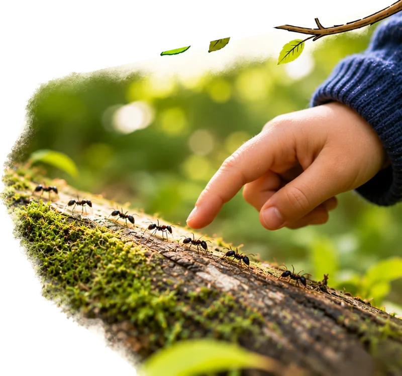

Nature lets their attention wander and the mind recharge
In nature, there’s always something to notice: a bird’s call, a leaf changing color, a trail of ants. Outside, my kids can spend a long time absorbed, tracking a cloud or watching leaves move in the wind. It’s a different kind of focus: curious, effortless and deeply engaging.
Very large studies link nature to children’s attention and well-being. In Barcelona, 2,593 schoolchildren at greener schools improved more in memory and attention over a year. In Denmark, children who grew up with more green space, nearly one million of them, had lower rates of mental health problems later in life.
One leading explanation is “soft fascination”: nature holds attention gently, giving the brain’s effortful focus a chance to rest.
Sources
- Dadvand et al. (2015). PNAS, 112(26), 7937–7942.
- Engemann et al. (2019). PNAS, 116(11), 5188–5193.
- Kaplan, R. & Kaplan, S. (1989). The Experience of Nature. Cambridge University Press.

So we try to build in time to explore, notice and be curious.


 Let the child choose the path
Let the child choose the path Make earth art
Make earth art Create a family nature ritual
Create a family nature ritual